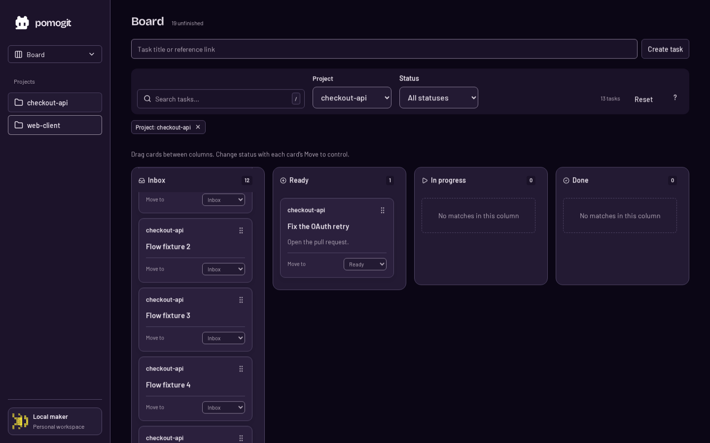

Resting
Ready1 task
checkout-apiDrag
Fix the OAuth retry
Open the pull request.
Move toReady ▾
A visible grip with a short Drag label; the card title still opens task details.
HTML study · existing Electric palette
Keep the Board and task window layout. Make dragging visible on desktop, explain the drop destination, and clarify that opening Workspace does not start the timer. These are static examples; the React visual changes await your review.
On mobile, use Move to. The desktop drag handle stays hidden.
Resting
Open the pull request.
A visible grip with a short Drag label; the card title still opens task details.
Hover / focus within
Open the pull request.
A restrained lilac border connects the handle and card without adding permanent glow.
Dragging over destination
Open the pull request.
Release to move to In progress
Destination uses the active theme’s accent rather than the hard-coded pale green.
Task window · existing actions
Workspace · optional focus
| Finding | Action |
|---|---|
| Board filters cleared on Open in Workspace | Fixed in React: filters now belong to their page. |
| Board column scroll reset on return | Fixed in React: preserve Board scroll while the workspace stays open. |
| Task saved confirmation | Already present with an accessible status notification and Undo. Keep it. |
| Open vs Start focus | Behavior already correct. The explanatory text and Back to Board control above are proposed. |
| Drag visibility and dark drop target | Proposed visual polish above; no React styling changes yet. |
Captured in mock mode. The large empty regions belong to filtered columns, not missing content.

Preview checks cover six widths in both themes. The four light-theme contrast flags for card copy, Move to, Drag and the grip were fixed with the existing ink token; dark-theme checks were clear.
HTML examples are static: Drag, Edit, Open and Back controls demonstrate appearance only. Theme switching is a review control. No backend or account data changes.